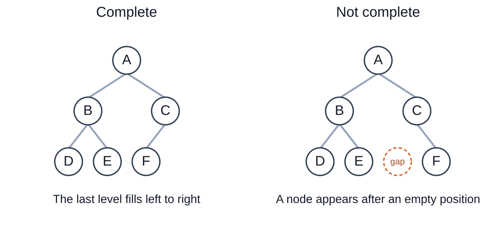
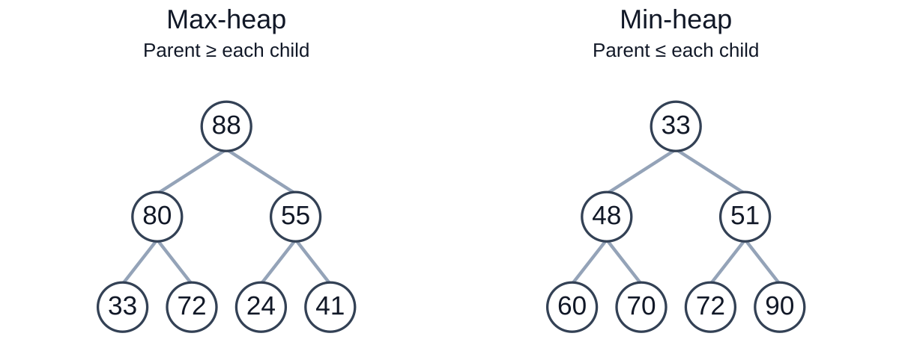
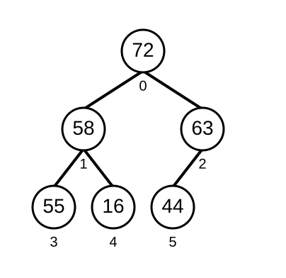
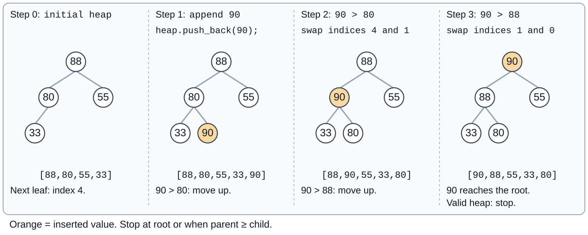
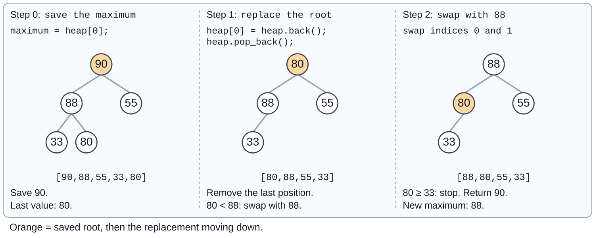
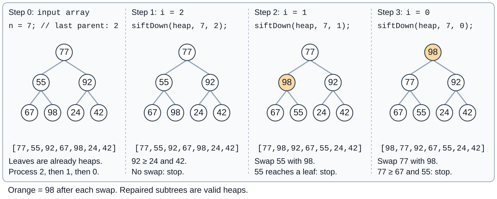

Heaps
Liting Zhang
University of West Florida
Outline
Heap shape, heap order, and array representation
Insertion, removal, and their costs
Bottom-up heap construction
Heapsort and priority queues
What Is a Binary Heap?
A binary heap stores its nodes in a complete binary tree.
All levels are full except possibly the last, which fills left to right.
With N ≥ 1 nodes, the height is ⌊log₂ N⌋ edges.
Every parent follows the heap property, placing the maximum or minimum at the root.
Heaps support priority queues and heapsort.

Max-Heaps and Min-Heaps
In a max-heap, each parent ≥ its children, so the root holds a maximum.
In a min-heap, each parent ≤ its children, so the root holds a minimum.
Equal values are allowed in either heap.
Siblings and separate subtrees have no required order.

A Heap in an Array
Store nodes in level order.
Top to bottom, then left to right within each level.
No gaps in storage, so index formulas replace pointers.
Root at index 0, last leaf at index N − 1.
Value: 72 58 63 55 16 44
Index: 0 1 2 3 4 5
Parent and Child Indices
Parent and child positions depend on index i and heap size N.
At i = 1, the parent is 0 and the children are 3 and 4.
| Relative | Index | When it exists |
|---|---|---|
| Parent | ⌊(i − 1) / 2⌋ | i > 0 |
| Left child | 2i + 1 | 2i + 1 < N |
| Right child | 2i + 2 | 2i + 2 < N |
Leaves start at ⌊N/2⌋.
For N ≥ 2, the last parent is ⌊N/2⌋ − 1.
Insert into a Max-Heap
Append at the next leaf to preserve the complete shape.
Percolate up while child > parent, stopping at the root or when order holds.
Only the new node's ancestor path can violate heap order.

Insertion Code
The index i follows the inserted value upward until the heap property holds.
void insertMax(std::vector<int>& heap, int value) {
heap.push_back(value);
int i = static_cast<int>(heap.size()) - 1;
while (i > 0) {
int parent = (i - 1) / 2;
if (heap[parent] >= heap[i]) break;
std::swap(heap[parent], heap[i]);
i = parent;
}
}Remove the Maximum
Save the root, replace it with the last leaf, and remove the last position.
Removing the last leaf preserves the complete shape.
Percolate down with the larger child until heap order holds.

Downward Repair Code
siftDownrepairs index i within the first n items.Both child subtrees must already be heaps.
void siftDown(std::vector<int>& heap, int n, int i) {
while (2 * i + 1 < n) { // a left child exists
int child = 2 * i + 1;
if (child + 1 < n && heap[child + 1] > heap[child])
++child; // choose the larger child
if (heap[i] >= heap[child]) break;
std::swap(heap[i], heap[child]);
i = child;
}
}For n = 0 or n = 1, the loop performs no child comparison.
Removal Code
Save the maximum, replace the root, shrink the heap, and repair downward.
An empty heap raises an error. A one-item heap becomes empty without repair.
int removeMax(std::vector<int>& heap) {
if (heap.empty())
throw std::out_of_range("empty heap");
int maximum = heap[0];
heap[0] = heap.back();
heap.pop_back();
siftDown(heap, static_cast<int>(heap.size()), 0);
return maximum;
}Heap Operation Costs
Each repair follows one path through a tree of height O(log N).
| Operation | Time | Reason |
|---|---|---|
| Read maximum | O(1) | Read index 0 |
| Insert | O(log N) amortized | Append and repair upward |
| Remove maximum | O(log N) worst case | Replace root and repair downward |
| Search for an arbitrary value | O(N) worst case | No BST ordering between subtrees |
A vector insertion may also require more storage.
Upward repair takes O(log N) in the worst case.
Reallocation adds O(N) when capacity is exhausted.
Bottom-Up Heap Construction
Leaves are already heaps, so start at the last parent: ⌊N/2⌋ − 1.
Work toward index 0, repairing each parent above child subtrees that are already heaps.

Heap Construction Code
Bottom-up construction, also called heapify, reuses the same downward repair.
void buildMaxHeap(std::vector<int>& heap) {
int n = static_cast<int>(heap.size());
for (int i = n / 2 - 1; i >= 0; --i)
siftDown(heap, n, i);
}Process parents from the last parent down to index 0.
Leaves need no repair.
Each parent starts with child subtrees that are already heaps.
Repeated insertion also builds a heap, but takes O(N log N) in the worst case.
Why Construction Takes O(N)
Most nodes are near the leaves and can move only a short distance.
| Subtree height | Approximate node count | Levels moved per node, at most |
|---|---|---|
| 0 (leaves) | N/2 | 0 |
| 1 | N/4 | 1 |
| 2 | N/8 | 2 |
| 3 | N/16 | 3 |
Total construction work is O(N).
Visiting all parents costs O(N).
Total downward movement is bounded by
N(1/4 + 2/8 + 3/16 + …) = O(N).The series sums to 1, so the movement bound is proportional to N.
Heapsort
Heapsort places each maximum at the end of the active range.
Build a max-heap in the input array.
Swap the root with the last active item, then shrink the heap.
Repair the root and repeat steps 2–3 until one active item remains.
The sorted suffix grows right to left, producing ascending order.
Heapsort Trace
Input
[1,2,3,5,6,4]becomes the max-heap[6,5,4,1,2,3].Swap the root with index
end, then repair the remaining heap.For
end = 5, fix index 5 and repair indices 0–4.
| Index fixed ( end) | Remaining heap indices | After root swap | After heap repair |
|---|---|---|---|
| 5 | 0–4 | 354126 | 534126 |
| 4 | 0–3 | 234156 | 432156 |
| 3 | 0–2 | 132456 | 312456 |
| 2 | 0–1 | 213456 | 213456 |
| 1 | 0 | 123456 | 123456 |
White cells form the active heap. Gray cells form the fixed sorted suffix after
|.After the last row, the final active value is also in its sorted position.
Heapsort Code
After the swap, end is the active heap size.
siftDown(heap, end, 0)repairs only indices 0 through end − 1.Index end holds its final sorted value and stays untouched.
void heapSort(std::vector<int>& heap) {
buildMaxHeap(heap);
int n = static_cast<int>(heap.size());
for (int end = n - 1; end > 0; --end) {
std::swap(heap[0], heap[end]);
siftDown(heap, end, 0);
}
}Heapsort Analysis
| Phase | Cost |
|---|---|
| Build the heap once | O(N) |
| N − 1 extractions, each at most O(log N) | O(N log N) |
| Worst-case total | O(N log N) |
Heapsort works in place.
Iterative
siftDownneeds O(1) extra space.
Heapsort is not stable.
Swaps can reorder records with equal keys.
A root/end swap changes (2,A), (2,B) into (2,B), (2,A).
A Heap Implements a Priority Queue
| Priority-queue operation | Heap operation | Time |
|---|---|---|
| Enqueue | Insert and repair upward | O(log N) amortized |
| Dequeue | Remove root and repair downward | O(log N) worst case |
| Peek | Read the root | O(1) |
| IsEmpty / GetLength | Read the stored size | O(1) |
Use a max-heap when larger values have higher priority.
Use a min-heap when smaller values have higher priority.
Reverse the comparisons used in max-heap operations.
For example, serve the task with the earliest deadline first.
Equal-priority items need an extra tie rule if arrival order must be preserved.
Summary
A heap combines a complete shape with parent-child ordering to keep an extreme value at the root.
Insertion repairs upward and root removal repairs downward, each along one path of logarithmic height.
Bottom-up construction takes O(N) because most nodes need little repair.
Heapsort reuses construction and downward repair for O(N log N) worst-case time and O(1) extra space.